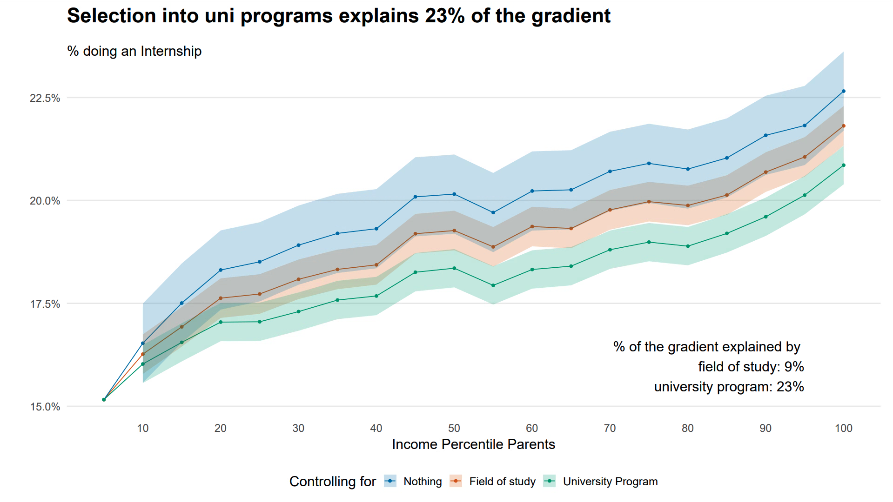
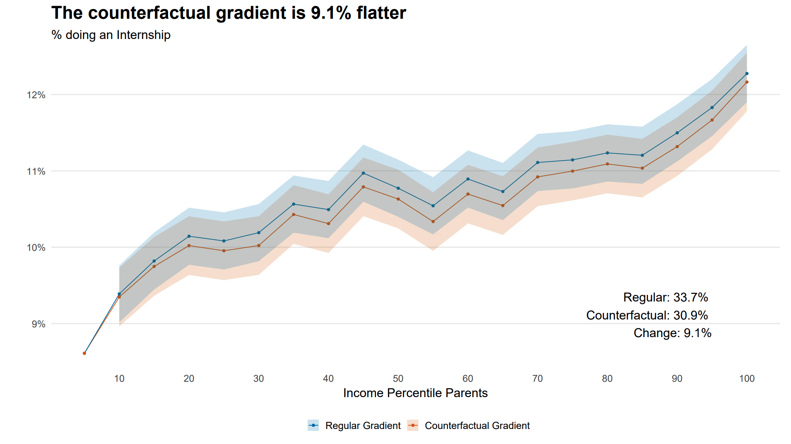
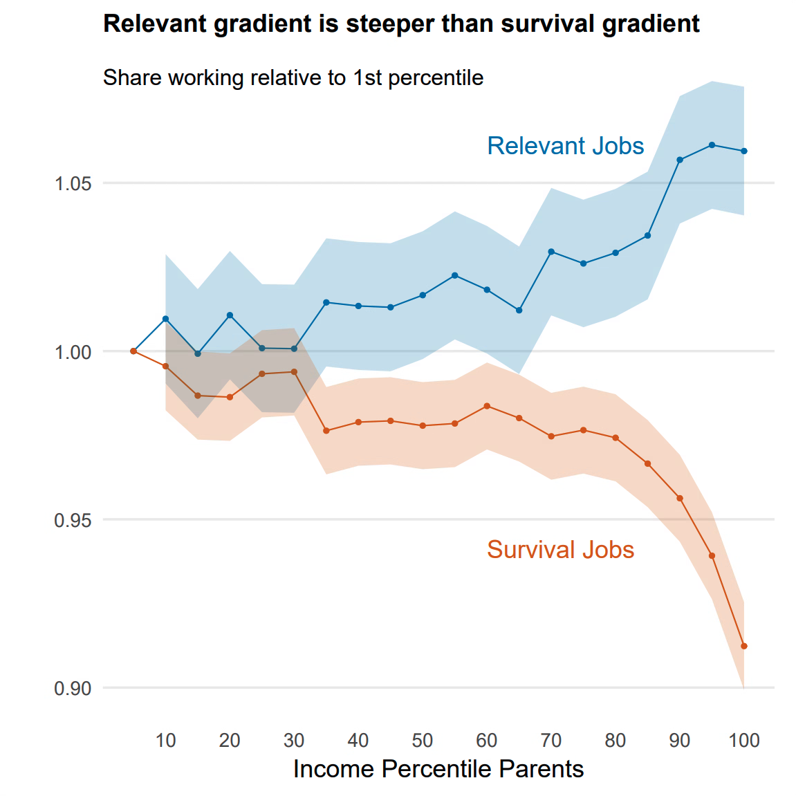

| Outcome: Doing an internship | ||
|---|---|---|
| Income Gradient (0-1) | 0.045*** (0.008) |
0.045*** (0.007) |
| Standardised Exam Score | 0.002 (0.002) |
|
| Uni Program FE | ✓ | ✓ |
| Observations | 654,273 | 654,273 |
Abstract
Internships may play an important role in shaping labor market inequality. Using Dutch admin data, we show that the richest university students are 38% more likely to do an internship than the poorest students. This inequality matters. The literature has found long-term wage returns to doing an internship between five and ten percent, and we show that internships are associated with 12% of income inequality seven years after graduation.
In our paper, we investigate what creates the differences in who does internships. High school exam scores don’t explain any of the inequality between rich and poor, however, selection into university programs can explain 23% of the inequality. We study the importance of family connections using a causal design that compares siblings and find that connections explain at least nine percent of the inequality. Lastly, we show evidence that the opportunity costs of doing an internship may be important as well.
5-Minute Summary
Rich students in the Netherlands do more internships than poor students. A student with parents in the top income percentile is 38% more likely to do an internship during their university degree, than a student from the poorest percentile. Our paper tries to explain why the internship gradient exists and how it affects intergenerational income inequality.

Why do rich students do more internships?
There are several possible reasons. It could be about selection into universities and subjects. It could be that rich students have better connections. It could be about the opportunity costs of doing a badly paid internship. Or, it could be that richer students are simply more intelligent. We will cover each of these reasons and try to quantify how much of the internship gradient they can explain.
Selection

How important is selection? Some of the internship gradient could be explained by which subjects, universities, and programmes rich versus poor students select into. We quantify the role of selection by showing how much the gradient flattens after we control for a certain measure of selection (Figure 2). Compared to the blue original gradient, controlling for the specific university program flattens the gradient by 23%. In other words, 23% of the inequality in who does internships is related to the specific program a student enrols in. This result could reflect different things. It may reflect that richer students simply chose subjects in which internships are more common. But it may also reflect other differences, such as information on which programs offer the best career support. For example, richer students may attend better high schools that provide career-oriented guidance on which university programs to apply to.
Connections
Anecdotally, getting an internship is often about connections. In our paper, we estimate the causal effect of having a family connection by comparing siblings. We define connections by looking at the industries that a student’s family members work in. For each field of study we identify which industries students typically do internships in. A student has a connection if any of their family members work in one of the typical industries. Then we identify all sibling pairs among the students. If the pair does not study in the same field or at the same time, it’s likely that one sibling will have a connection while the other one does not.
We identify the causal effect of having a connection with the following regression: \(\text{Internship}_i = \alpha + \beta \text{Connection}_i + \gamma_f \text{Family}_f + \lambda_{su} \text{Study Field}_s \times \text{University}_u + \theta_y \text{Year}_y + \epsilon_i\) where \(\beta\) estimates how much more likely a student with a connection is to get an internship, relative to their sibling and relative to other students who study in the same field at the same university.
We find no effect for Bachelor’s students but a significant effect of 1.1 percentage points for Master’s students, which corresponds to a five percent increase in the likelihood of doing an internship. The effect is small, but the importance of connections varies a lot between fields of study. In Figure 3, we therefore show heterogeneous treatment effects for each field of study. In many fields connection do not help, but in many others they do and we find that having a connection can raise the likelihood of doing an internship by 10-15%.

To quantify how much connections affect the internship gradient, we construct a counterfactual. In the counterfactual we simulate internship rates if every student would have a connection. For this we identify all students who currently do not have a connection and add their relevant treatment effect to the internship variable. Based on this data we calculate a new gradient that considers these students’ additional likelihood of doing an internship. Figure 4 shows the original and counterfactual gradient. We conclude that family connections can explain 9% of the total inequality in who does an internship.

Opportunity Costs
Many Dutch students work in student jobs. We argue that such jobs present an opportunity cost for internships because they pay the minimum wage. Opportunity costs could contribute to the internship inequality if they matter more to poor students, for example because liquidity constraints prevent poor students from doing an internship instead of their student job. Figure 5 shows that the gradient for student jobs is indeed much flatter than the gradient for internships. To dig deeper into what student jobs are, we categorise them as relevant (related to your field of study) and survival (retail, gastronomy, etc.) jobs (Figure 6). Also here we see a similar difference, rich students are a bit more likely to work in relevant jobs while poor students are much more likely to work in survival jobs.


Although the evidence in Figure 5 is only indicative, it does indicate that opportunity costs play a role in the inequality in internships. In the future we’d like to use a causal design to quantify how much opportunity costs contribute to the income gradient in internships.
Ability
The simplest explanation for why rich students do more internships could be that, on average, they are more intelligent. To test this hypothesis we would like to see how controlling for ability changes the internship gradient. Of course, we don’t observe ability. But we can proxy it using exam scores from the nationwide high school graduation exams in the Netherlands. Table 1 shows that controlling for exam scores doesn’t affect the gradient. In fact, exam scores do not predict who does internships at all.
Does it matter?
Does it really matter that rich students do more internships than poor students? The literature suggests yes. Several papers estimated the causal returns to doing an internship and found that they increase wages between 5%-15% (Margaryan et al. 2022, Bolli et al. 2019), they increase chances of being invited to an interview by 15% (Baert et al. 2021, Nunley et al. 2016), and they increase the speed of being promoted (Weiss et al. 2014). Moreover, in the Dutch data we find that students who did internships have 20% higher wages seven years after graduation. Lastly we want to quantify how internships are related to income inequality in general. For this we estimate an intergenerational income gradient by regressing students’ income after graduation on their parents’ household income percentile, and test how much the gradient flattens when we control for internships. Table 2 shows that even in the long term, more than 10% of intergenerational income inequality is related to whether or not students do an internship.
Outlook
This paper is work in progress. In the short term, we plan to quantify by how much opportunity costs affect the gradient. In the long term, we plan to estimate causal labor market returns to internships, and think about why firms offer internships. Do reach out if you have any questions, comments, or suggestions.